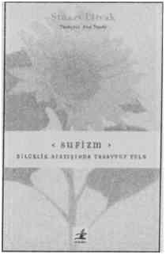

Sufizm, Yaradan’a yapılan yolculuğun ilmidir.
Kabul edilen çözümlemeye göre suf'dan, yünden gelir.
Şeyh Hasan Basri şöyle demiştir: “Bedir ashabından kırk kişi gördüm, hepsi yün giymişlerdi.” Bu, sûfi, tasavvefe- yüne büründü demektir.
İslam’ın yolunu dille ve kitaptan öğrenmeye tasdik edenlerinkinden farklıdır. Kadim yola, Mutlak Hakikatin doğrudan yaşandığı asıl yola girmektir sufizm.
Cüneyt dedi: “Sûfi toprak gibidir, üzerine gübre serpilir ama içinden güller biter.” Yine dedi ki: “Sûfi masumu da mücrimi de besleyen toprak, herşeyi örten sema, herşeyi yıkayan yağmur gibidir.”
Sûfi evrenseldir. Evrenin Hakikatin berrak bir tecellisine yer açabilmek için nefsinin izlerini azaltmış, yoketmiştir. Kozmosu sarıp sarmalamış, silip öteye geçmiştir. Sûfi “Allah” demiştir, kavrayıncaya kadar. Bütün erkek ve kadınlar dünyada çocuklar gibi oyundadırlar. Sufi’nin görevi başlangıçtaki sonu farketmek, sondaki başlangıcı kabul etmek, vahdete ulaşmaktır. Zahirdeki zıtlıklar aynı kabulle karşılandığında, an “hal” olduğunda ve kalp doluda da boşta da sükûnetini koruduğunda, bunu nur üstüne nur kabul ettiğinde yün hırkaya bürülü kişi aynı zamanda şeref hırkasını giymiş ve kemâle ermiştir.